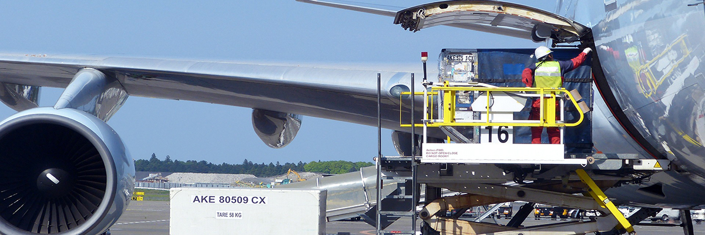
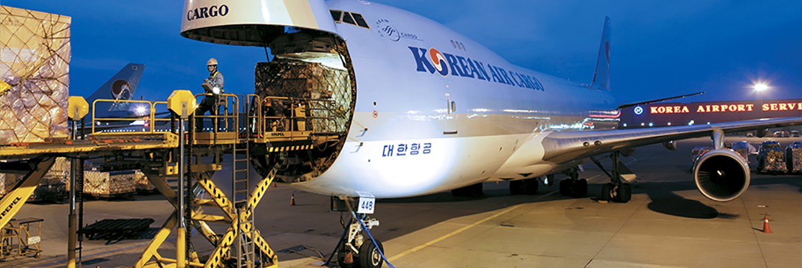
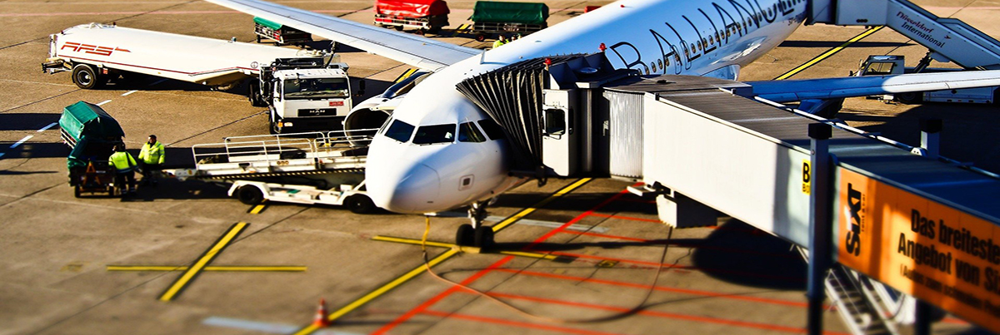

정보기술
항공사에게 최고의 서비스를 제공하기 위한
KAS 의 IT Solution 입니다.
통합조업시스템
한국공항은 인천국제공항공사 및 고객 항공사의 시스템과 직접 연계하여 지상조업 전반을 실시간으로 통합관리하는 통합조업시스템 (TOSS)을 운영하고 있습니다.
- 01
통합조업시스템과 모바일 조업 시스템을 활용한 선진조업 시스템 구축, 태블릿 PC 활용한 모바일 시스템을 개발하여 운영함으로써 신속 정확한 조업관리를 수행하고 있습니다. - 02
한국공항은 첨단 IT 기술을 기반으로 한 시스템을 운영하여 고객 항공사에게 최고의 서비스를 제공 할 수 있도록 최선을 다하고 있습니다.
화물조업시스템
한국공항은 ev-System을 통한 물류 혁신 노력을 평가받아 2008년도 한국물류대상 국토해양부 장관상을 수상하였으며, 앞으로도 혁신적인 IT 인프라를 구축하여 고객이 원하는 최적의 서비스를 제공 할 수 있도록 최선을 다하고 있습니다.
- 01
ev-System,ETV,RFID 기술을 활용한 최적의 화물 조업 시스템 구축 - 02
ETV,AS/RS 등 자동화 장비와 연계하여 운영함으로써 안전하고 신속하게 처리 - 03
PDA 및 RFID 기술로 고객이 화물을 입,출고 하는데 불편 최소화
급유조업시스템
한국공항은 급유조업시스템을 활용하여 Ground Time 내에 정확하고 신속하게 항공기 급유를 수행함으로써 항공기의 정시운항에 차질이 없도록 최선의 노력을 다하고 있습니다.
한국공항은 고객 항공사의 Fuel order 와 연계된 급유조업시스템을 운영하여 신속 정확하게 급유를 수행하고 있습니다. 급유조업시스템을 활용한 신속 정확한 급유 조업 관리 체제 구축 Fuel order 를 바탕으로 급유전표를 발행하고, 항공유 검사, 고객사별 급유실적집계, 세관 EDI 전송 등 항공기 급유 전반에 걸친 업무를 관리하고 있습니다.